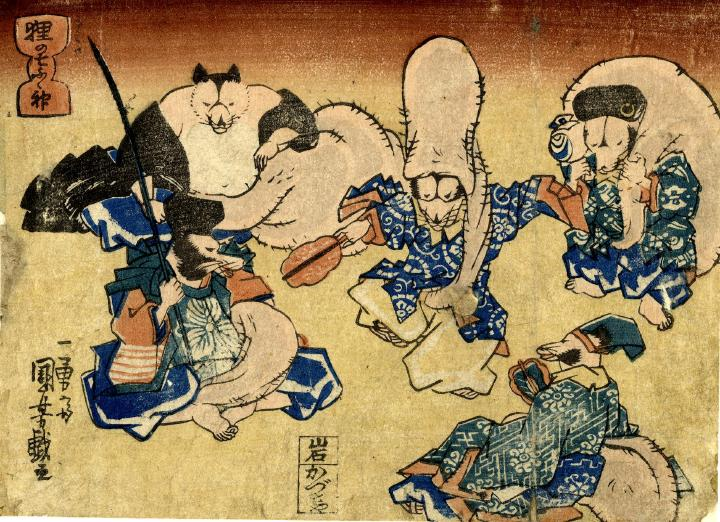

狸が七福神を真似して遊んでいる。みな陰嚢を巧みに使って扮装している。化けているのは、布袋、福禄寿、大黒、恵比寿、寿老人の五神である。
著作者：一勇斎国芳／出典：親書誌：U426_nichibunken_0257：せんきもち 狸の七ふく神；センキモチタヌキノシチフクジン／日付：2011／資源識別子：U426_nichibunken_0257_0002_0000
Copyright (c)2010- International Research Center for Japanese Studies, Kyoto, Japan. All rights reserved.